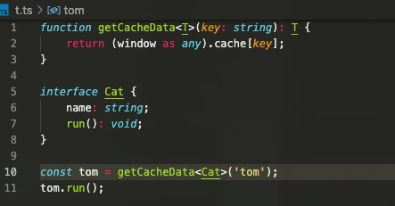
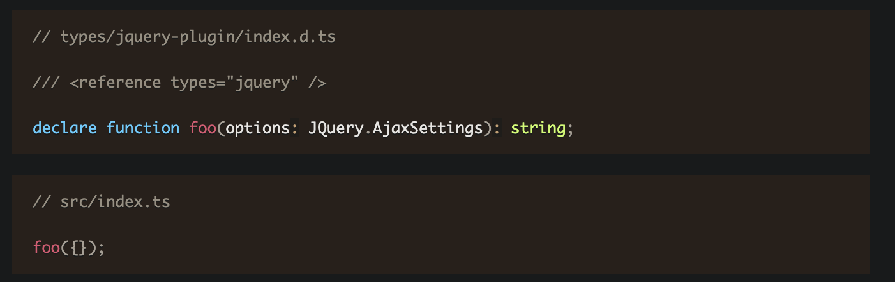
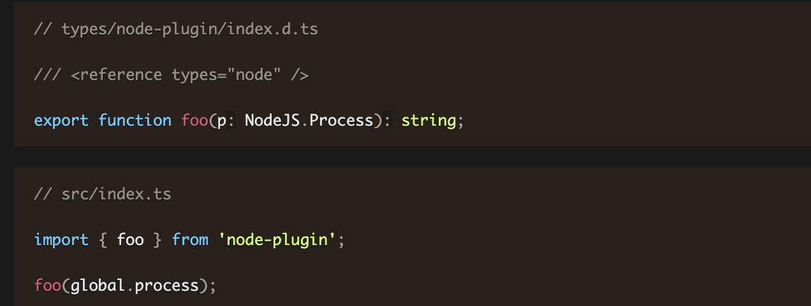
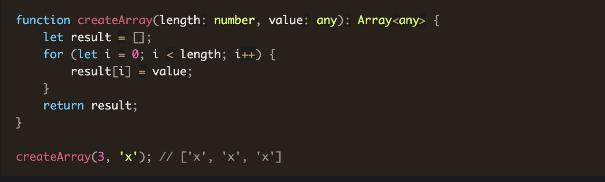
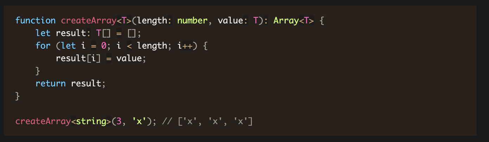
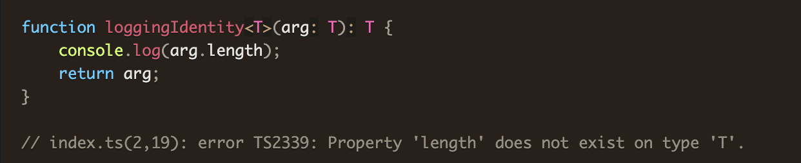
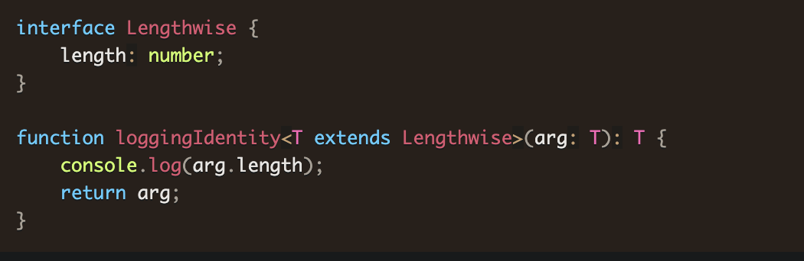
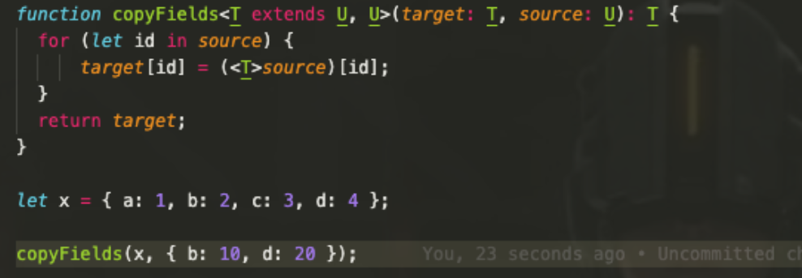
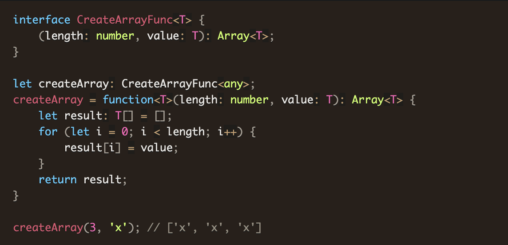
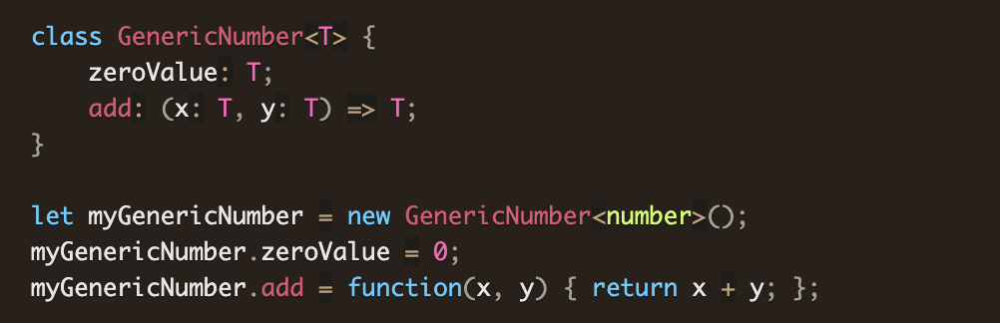

特点？
带来的问题？
无法精确对应
代码难以阅读
变量、方法人肉推导
难以修改或重构
从入门到“精通”
动态类型
// 布尔类型
let isDone: boolean = false
// 数值
let aNum: number = 6
// 字符串
let str: string = 'Gorge'
JavaScript 没有空值（Void）的概念，在 TypeScript 中，可以用 void 表示没有任何返回值的函数
function alertName(): void {
alert('My name is Tom');
}
声明一个 void 类型的变量没有什么用，因为你只能将它赋值为 undefined 和 null
let unusable: void = undefined
在 TypeScript 中，可以使用 null 和 undefined 来定义这两个原始数据类型
let u: undefined = undefined;
let n: null = null;
与 void 的区别是，undefined 和 null 是所有类型的子类型。也就是说 undefined 类型的变量，可以赋值给 number 类型的变量
// 这样不会报错
let num: number = undefined;
let u: undefined;
let num: number = u;
let u: void;
// Type 'void' is not assignable to type 'number'.
let num: number = u;
如果没有明确的指定类型，那么 TypeScript 会依照类型推论（Type Inference）的规则推断出一个类型。
let num = 'seven';
num = 7;
// index.ts(2,1): error TS2322: Type 'number' is not assignable to type 'string'.
联合类型（Union Types）表示取值可以为多种类型中的一种
let numStr: string | number;
numStr = 'seven';
numStr = 7;
当 TypeScript 不确定一个联合类型的变量到底是哪个类型的时候，我们只能访问此联合类型的所有类型里共有的属性或方法
function getLength(something: string | number): number {
return something.length;
}
// index.ts(2,22): error TS2339: Property 'length' does not exist on type 'string | number'.
// Property 'length' does not exist on type 'number'.
访问 string 和 number 的共有属性是没问题的
function getString(something: string | number): string {
return something.toString();
}
联合类型的变量在被赋值的时候，会根据类型推论的规则推断出一个类型
let numStr: string | number;
numStr = 'seven';
console.log(numStr.length); // 5
numStr = 7;
console.log(numStr.length); // 编译时报错
// index.ts(5,30): error TS2339: Property 'length' does not exist on type 'number'.
在面向对象语言中，接口（Interfaces）是一个很重要的概念，它是对行为的抽象，而具体如何行动需要由类（classes）去实现（implement）。TypeScript 中的接口是一个非常灵活的概念，除了可用于对类的一部分行为进行抽象以外，也常用于对「对象的形状（Shape）」进行描述
interface Person {
name: string;
age: number;
job?: string; // 可选属性
}
let tom: Person = {
name: 'Tom',
age: 25,
// wife: '尤雨河' // error
};
// ⚠️ 赋值的时候，变量的形状必须和接口的形状保持一致
任意属性
interface Person {
name: string;
age?: number;
[key: string]: any;
}
let tom: Person = {
name: 'Tom',
gender: 'male'
};
需要注意的是，一旦定义了任意属性，那么确定属性和可选属性的类型都必须是它的类型的子集
interface Person {
name: string;
age?: number; // number 不是string的子集
[propName: string]: string;
}
let tom: Person = {
name: 'Tom',
age: 25,
gender: 'male'
};
// index.ts(3,5): error TS2411: Property 'age' of type 'number' is not assignable to string index type 'string'.
// index.ts(7,5): error TS2322: Type '{ [x: string]: string | number; name: string; age: number; gender: string; }' is not assignable to type 'Person'.
// Index signatures are incompatible.
// Type 'string | number' is not assignable to type 'string'.
// Type 'number' is not assignable to type 'string'.
只读属性
interface Person {
readonly id: number;
name: string;
age?: number;
[propName: string]: any;
}
let tom: Person = {
id: 89757,
name: 'Tom',
gender: 'male'
};
tom.id = 9527;
// index.ts(14,5): error TS2540: Cannot assign to 'id' because it is a constant or a read-only property.
注意，只读的约束存在于第一次给对象赋值的时候，而不是第一次给只读属性赋值的时候
interface Person {
readonly id: number;
name: string;
age?: number;
[propName: string]: any;
}
let tom: Person = {
name: 'Tom',
gender: 'male'
};
tom.id = 89757;
// index.ts(8,5): error TS2322: Type '{ name: string; gender: string; }' is not assignable to type 'Person'.
// Property 'id' is missing in type '{ name: string; gender: string; }'.
// index.ts(13,5): error TS2540: Cannot assign to 'id' because it is a constant or a read-only property.
let fibonacci: Array = [1, 1, 2, 3, 5];
let fibonacci: number[] = [1, 1, 2, 3, 5];
事实上常用的类数组都有自己的接口定义，如 IArguments, NodeList, HTMLCollection 等
function sum() {
let args: IArguments = arguments;
}
在 JavaScript 中，有两种常见的定义函数的方式——函数声明（Function Declaration）和函数表达式（Function Expression）
// 函数声明（Function Declaration）
function sum(x, y) {
return x + y;
}
// 函数表达式（Function Expression）
let mySum = function (x, y) {
return x + y;
};
一个函数有输入和输出，要在 TypeScript 中对其进行约束，需要把输入和输出都考虑到，其中函数声明的类型定义较简单
function sum(x: number, y: number): number {
return x + y;
}
let mySum: (x: number, y: number) => number = function (x: number, y: number): number {
return x + y;
};
使用接口的方式来定义一个函数需要符合的形状
interface SearchFunc {
(source: string, subString: string): boolean;
}
let mySearch: SearchFunc;
mySearch = function(source: string, subString: string) {
return source.search(subString) !== -1;
}
可选参数必须接在必需参数后面
function buildName(firstName: string, lastName?: string) {
if (lastName) {
return firstName + ' ' + lastName;
} else {
return firstName;
}
}
let tomcat = buildName('Tom', 'Cat');
let tom = buildName('Tom');
参数默认值， ⚠️ TypeScript 会将添加了默认值的参数识别为可选参数
function buildName(firstName: string, lastName: string = 'Cat') {
return firstName + ' ' + lastName;
}
let tomcat = buildName('Tom', 'Cat');
let tom = buildName('Tom');
此时就不受「可选参数必须接在必需参数后面」的限制了
function buildName(firstName: string = 'Tom', lastName: string) {
return firstName + ' ' + lastName;
}
let tomcat = buildName('Tom', 'Cat');
let cat = buildName(undefined, 'Cat');
ES6 中，可以使用 ...rest 的方式获取函数中的剩余参数（rest 参数）
function push(array, ...items) {
items.forEach(function(item) {
array.push(item);
});
}
let a: any[] = [];
push(a, 1, 2, 3);
事实上，items 是一个数组。所以我们可以用数组的类型来定义它
function push(array: any[], ...items: any[]) {
items.forEach(function(item) {
array.push(item);
});
}
let a = [];
push(a, 1, 2, 3);
重载 允许一个函数接受不同数量或类型的参数时，作出不同的处理
function reverse(x: number | string): number | string | void {
if (typeof x === 'number') {
return Number(x.toString().split('').reverse().join(''));
} else if (typeof x === 'string') {
return x.split('').reverse().join('');
}
}
// ⚠️ 然而这样有一个缺点，就是不能够精确的表达，输入为数字的时候，输出也应该为数字，输入为字符串的时候，输出也应该为字符串
我们重复定义了多次函数 reverse，前几次都是函数定义，最后一次是函数实现。在编辑器的代码提示中，可以正确的看到前两个提示重载 允许一个函数接受不同数量或类型的参数时，作出不同的处理
function reverse(x: number): number;
function reverse(x: string): string;
function reverse(x: number | string): number | string | void {
if (typeof x === 'number') {
return Number(x.toString().split('').reverse().join(''));
} else if (typeof x === 'string') {
return x.split('').reverse().join('');
}
}
值 as 类型
将一个联合类型断言为其中一个类型
interface Cat {
name: string;
run(): void;
}
interface Fish {
name: string;
swim(): void;
}
function isFish(animal: Cat | Fish) {
if (typeof animal.swim === 'function') {
return true;
}
return false;
}
// index.ts:11:23 - error TS2339: Property 'swim' does not exist on type 'Cat | Fish'.
// Property 'swim' does not exist on type 'Cat'.
此时可以使用类型断言，将 animal 断言成 Fish
interface Cat {
name: string;
run(): void;
}
interface Fish {
name: string;
swim(): void;
}
function isFish(animal: Cat | Fish) {
if (typeof (animal as Fish).swim === 'function') {
return true;
}
return false;
}
将一个父类断言为更加具体的子类
class ApiError extends Error {
code: number = 0;
}
class HttpError extends Error {
statusCode: number = 200;
}
function isApiError(error: Error) {
if (typeof (error as ApiError).code === 'number') {
return true;
}
return false;
}
更优的方式？ instanceof
// ApiError 是一个 JavaScript 的类，能够通过 instanceof 来判断 error 是否是它的实例
class ApiError extends Error {
code: number = 0;
}
class HttpError extends Error {
statusCode: number = 200;
}
function isApiError(error: Error) {
if (error instanceof ApiError) {
return true;
}
return false;
}
⚠️ ApiError是一个接口，instanceof并不是更优的方式
interface ApiError extends Error {
code: number;
}
interface HttpError extends Error {
statusCode: number;
}
function isApiError(error: Error) {
if (error instanceof ApiError) {
return true;
}
return false;
}
// index.ts:9:26 - error TS2693: 'ApiError' only refers to a type, but is being used as a value here.
此时就只能用类型断言，通过判断是否存在 code 属性，来判断传入的参数是不是 ApiError
interface ApiError extends Error {
code: number;
}
interface HttpError extends Error {
statusCode: number;
}
function isApiError(error: Error) {
if (typeof (error as ApiError).code === 'number') {
return true;
}
return false;
}
将任何一个类型断言为 any
(window as any).foo = 1;
// ⚠️ 它极有可能掩盖了真正的类型错误，所以如果不是非常确定，就不要使用 as any。
将 any 断言为一个具体的类型
// 历史遗留的代码中有个 getCacheData，它的返回值是 any
function getCacheData(key: string): any {
return (window as any).cache[key];
}
那么我们在使用它时，最好能够将调用了它之后的返回值断言成一个精确的类型，这样就方便了后续的操作
function getCacheData(key: string): any {
return (window as any).cache[key];
}
interface Cat {
name: string;
run(): void;
}
const tom = getCacheData('tom') as Cat;
tom.run();
⚠️ 除非迫不得已，千万别用双重断言
interface Cat {
run(): void;
}
interface Fish {
swim(): void;
}
function testCat(cat: Cat) {
return (cat as any as Fish);
}
类型断言只会影响 TypeScript 编译时的类型，类型断言语句在编译结果中会被删除
function toBoolean(something: any): boolean {
return something as boolean;
}
toBoolean(1);
// 返回值为 1
// ⚠️ 类型断言不是类型转换，它不会真的影响到变量的类型
若要进行类型转换，需要直接调用类型转换的方法
function toBoolean(something: any): boolean {
return Boolean(something);
}
toBoolean(1);
// 返回值为 true
我们使用 as Cat 将 any 类型断言为了 Cat 类型
function getCacheData(key: string): any {
return (window as any).cache[key];
}
interface Cat {
name: string;
run(): void;
}
const tom = getCacheData('tom') as Cat;
tom.run();
实际上还有其他方式可以解决这个问题
function getCacheData(key: string): any {
return (window as any).cache[key];
}
interface Cat {
name: string;
run(): void;
}
const tom: Cat = getCacheData('tom');
tom.run();
区别是什么？
区别是什么？
interface Animal {
name: string;
}
interface Cat {
name: string;
run(): void;
}
const animal: Animal = {
name: 'tom'
};
let tom = animal as Cat;
// ⚠️
let tom: Cat = animal;
// index.ts:12:5 - error TS2741: Property 'run' is missing in type 'Animal' but required in type 'Cat'.
区别是什么？
// animal 断言为 Cat，只需要满足 Animal 兼容 Cat 或 Cat 兼容 Animal 即可
let tom = animal as Cat;
// animal 赋值给 tom，需要满足 Cat 兼容 Animal 才行
let tom: Cat = animal;
⚠️ 所以为了增加代码的质量，我们最好优先使用类型声明，这也比类型断言的 as 语法更加优雅
还有更优的方式么？
通过给 getCacheData 函数添加了一个泛型 T，我们可以更加规范的实现对 getCacheData 返回值的约束，这也同时去除掉了代码中的 any，是最优的一个解决方案
当使用第三方库时，我们需要引用它的声明文件，才能获得对应的代码补全、接口提示等功能
declare var // 声明全局变量
declare let // 声明全局变量
declare const // 声明全局变量(⚠️常用)
declare function //声明全局方法
declare class // 声明全局类
declare enum //声明全局枚举
declare namespace //声明（含有子属性的）全局对象
interface 、 type //声明全局类型
export //导出变量
export namespace // 导出（含有子属性的）对象
export default //ES6默认导出
export = // commonjs 导出模块
export as namespace // UMD库声明全局变量
declare global // 拓展全局变量
declare module // 拓展模块
假如我们想使用第三方库 jQuery，一种常见的方式是在 html 中通过 script 标签引入 jQuery，然后就可以使用全局变量 `$` 或 `jQuery` 了。
$('#foo');
// or
jQuery('#foo');
但是在 ts 中，编译器并不知道 `$` 或 `jQuery` 是什么东西，我们需要使用 `declare var` 来定义它的类型
declare var jQuery: (selector: string) => any;
jQuery('#foo');
通常我们会把声明语句放到一个单独的文件（jQuery.d.ts）中，这就是声明文件， 一般来说，ts 会解析项目中所有的 *.ts 文件，当然也包含以 .d.ts 结尾的文件。所以当我们将 jQuery.d.ts 放到项目中时，其他所有 *.ts 文件就都可以获得 jQuery 的类型定义了。 ⚠️ 声明文件必需以 .d.ts 为后缀。
├── src
| ├── index.ts
| └── jQuery.d.ts
└── tsconfig.json
// src/jQuery.d.ts
// 函数重载
declare function jQuery(selector: string): any;
declare function jQuery(domReadyCallback: () => any): any;
// src/index.ts
jQuery('#foo');
jQuery(function() {
alert('Dom Ready!');
});
// src/jQuery.d.ts
declare namespace jQuery {
function ajax(url: string, settings?: any): void;
const version: number;
class Event {
blur(eventType: EventType): void
}
enum EventType {
CustomClick
}
}
// src/index.ts
jQuery.ajax('/api/get_something');
console.log(jQuery.version);
const e = new jQuery.Event();
e.blur(jQuery.EventType.CustomClick);
// src/jQuery.d.ts
declare namespace jQuery {
function ajax(url: string, settings?: any): void;
namespace fn {
function extend(object: any): void;
}
}
// src/index.ts
jQuery.ajax('/api/get_something');
jQuery.fn.extend({
check: function() {
return this.each(function() {
this.checked = true;
});
}
});
除了全局变量之外，我们可能需要暴露一些全局的类型。 在声明文件中，我们可以直接使用 interface 或 type 来声明一个全局的接口或类型
// src/jQuery.d.ts
interface AjaxSettings {
method?: 'GET' | 'POST'
data?: any;
}
declare namespace jQuery {
function ajax(url: string, settings?: AjaxSettings): void;
}
// src/index.ts
let settings: AjaxSettings = {
method: 'POST',
data: {
name: 'foo'
}
};
jQuery.ajax('/api/post_something', settings);
暴露在最外层的 interface 或 type 会作为全局类型作用于整个项目中，我们应该尽可能的减少全局变量或全局类型的数量。故最好将他们放到 namespace 下
// src/jQuery.d.ts
declare namespace jQuery {
interface AjaxSettings {
method?: 'GET' | 'POST'
data?: any;
}
function ajax(url: string, settings?: AjaxSettings): void;
}
// src/index.ts
let settings: jQuery.AjaxSettings = {
method: 'POST',
data: {
name: 'foo'
}
};
jQuery.ajax('/api/post_something', settings);
jQuery 既是一个函数，可以直接被调用 jQuery('#foo')，又是一个对象，拥有子属性 jQuery.ajax()
// src/jQuery.d.ts
declare function jQuery(selector: string): any;
declare namespace jQuery {
function ajax(url: string, settings?: any): void;
}
// src/index.ts
jQuery('#foo');
jQuery.ajax('/api/get_something');
一般我们通过 import foo from 'foo' 导入一个 npm 包，这是符合 ES6 模块规范的。
在我们尝试给一个 npm 包创建声明文件之前，需要先看看它的声明文件是否已经存在。一般来说，npm 包的声明文件可能存在于两个地方：
假如以上两种方式都没有找到对应的声明文件，那么我们就需要自己为它写声明文件了。由于是通过 import 语句导入的模块，所以声明文件存放的位置也有所约束，一般有两种方案：
// 目录结构 /path/to/project
├── src
| └── index.ts
├── types
| └── foo
| └── index.d.ts
└── tsconfig.json
// tsconfig.json
{
"compilerOptions": {
"module": "commonjs",
"baseUrl": "./",
"paths": {
"*": ["types/*"]
}
}
}
如此配置之后，通过 import 导入 foo 的时候，也会去 types 目录下寻找对应的模块的声明文件了
主要语法
export // 导出变量
export namespace // 导出（含有子属性的）对象
export default // ES6默认导出
export = // commonjs 导出模块
对应的导出模块
// types/foo/index.d.ts
export const name: string;
export function getName(): string;
export class Animal {
constructor(name: string: string);
sayHi(): string;
}
export enum Directions {
Up,
Down,
Left,
Right
}
export interface Options {
data: any;
}
对应使用模块
// src/index.ts
import { name, getName, Animal, Directions, Options } from 'foo';
console.log(name);
let myName = getName();
let cat = new Animal('Tom');
let directions = [Directions.Up, Directions.Down, Directions.Left, Directions.Right];
let options: Options = {
data: {
name: 'foo'
}
};
混用declare和export
// types/foo/index.d.ts
declare const name: string;
declare function getName(): string;
declare class Animal {
constructor(name: string: string);
sayHi(): string;
}
declare enum Directions {
Up,
Down,
Left,
Right
}
interface Options {
data: any;
}
export { name, getName, Animal, Directions, Options };
export default
⚠️ 注意，只有 function、class 和 interface 可以直接默认导出，其他的变量需要先定义出来，再默认导出
// types/foo/index.d.ts
export default enum Directions {
// ERROR: Expression expected.
Up,
Down,
Left,
Right
}
export default
⚠️ 注意，只有 function、class 和 interface 可以直接默认导出，其他的变量需要先定义出来，再默认导出
// types/foo/index.d.ts
export default Directions; // 默认导出推荐置顶
declare enum Directions {
Up,
Down,
Left,
Right
}
在 commonjs 规范中，我们用以下方式来导出一个模块
// 整体导出
module.exports = foo;
// 单个导出
exports.bar = bar;
在 ts 中，针对这种模块导出，有多种方式可以导入，第一种方式是 const ... = require
// 整体导入
const foo = require('foo');
// 单个导入
const bar = require('foo').bar;
第二种方式是 import ... from，注意针对整体导出，需要使用 import * as 来导入
// 整体导入
import * as foo from 'foo';
// 单个导入
import { bar } from 'foo';
第三种方式是 import ... require，这也是 ts 官方推荐的方式
// 整体导入
import foo = require('foo');
// 单个导入
import bar = foo.bar;
export as namespace
// 一般使用 export as namespace 时，都是先有了 npm 包的声明文件，再基于它添加一条 export as namespace 语句，即可将声明好的一个变量声明为全局变量
// types/foo/index.d.ts
export as namespace foo;
export = foo;
declare function foo(): string;
declare namespace foo {
const bar: number;
}
有的第三方库扩展了一个全局变量，可是此全局变量的类型却没有相应的更新过来，就会导致 ts 编译错误，此时就需要扩展全局变量的类型。比如扩展 String 类型
interface String {
prependHello(): string;
}
'foo'.prependHello();
通过声明合并，使用 interface String 即可给 String 添加属性或方法。 也可以使用 declare namespace 给已有的命名空间添加类型声明
// types/jquery-plugin/index.d.ts
declare namespace JQuery {
interface CustomOptions {
bar: string;
}
}
interface JQueryStatic {
foo(options: JQuery.CustomOptions): string;
}
// src/index.ts
jQuery.foo({
bar: ''
});
如之前所说，对于一个 npm 包或者 UMD 库的声明文件，只有 export 导出的类型声明才能被导入。所以对于 npm 包或 UMD 库，如果导入此库之后会扩展全局变量，则需要使用另一种语法在声明文件中扩展全局变量的类型，那就是 declare global
此声明文件不需要导出任何东西，仍然需要导出一个空对象，用来告诉编译器这是一个模块的声明文件，而不是一个全局变量的声明文件
// types/foo/index.d.ts
declare global {
interface String {
prependHello(): string;
}
}
export {};
// src/index.ts
'bar'.prependHello();
如果是需要扩展原有模块的话，需要在类型声明文件中先引用原有模块，再使用 declare module 扩展原有模块
// types/moment-plugin/index.d.ts
import * as moment from 'moment';
declare module 'moment' {
export function foo(): moment.CalendarKey;
}
// src/index.ts
import * as moment from 'moment';
import 'moment-plugin';
moment.foo();
一个声明文件有时会依赖另一个声明文件中的类型，比如在前面的 declare module 的例子中，我们就在声明文件中导入了 moment，并且使用了 moment.CalendarKey 这个类型
// types/moment-plugin/index.d.ts
import * as moment from 'moment';
declare module 'moment' {
export function foo(): moment.CalendarKey;
}
还有一个语法也可以用来导入另一个声明文件，那就是三斜线指令
区别是？是什么场景下使用？
当我们在书写一个全局变量的声明文件时
在全局变量的声明文件中，是不允许出现 import, export 关键字的。一旦出现了，那么他就会被视为一个 npm 包或 UMD 库，就不再是全局变量的声明文件了。故当我们在书写一个全局变量的声明文件时，如果需要引用另一个库的类型，那么就必须用三斜线指令了
当我们在书写一个全局变量的声明文件时
我们需要依赖一个全局变量的声明文件时，由于全局变量不支持通过 import 导入，当然也就必须使用三斜线指令来引入了
类型别名用来给一个类型起个新名字
type Name = string;
type NameResolver = () => string;
type NameOrResolver = Name | NameResolver;
function getName(n: NameOrResolver): Name {
if (typeof n === 'string') {
return n;
} else {
return n();
}
}
字符串字面量类型用来约束取值只能是某几个字符串中的一个
type EventNames = 'click' | 'scroll' | 'mousemove';
function handleEvent(ele: Element, event: EventNames) {
// do something
}
handleEvent(document.getElementById('hello'), 'scroll'); // 没问题
handleEvent(document.getElementById('world'), 'dblclick'); // 报错，event 不能为 'dblclick'
// index.ts(7,47): error TS2345: Argument of type '"dblclick"' is not assignable to parameter of type 'EventNames'.
数组合并了相同类型的对象，而元组（Tuple）合并了不同类型的对象
let tom: [string, number] = ['Tom', 25];
let tom: [string, number];
tom[0] = 'Tom'; // pass
tom = ['Tom']; // error 当直接对元组类型的变量进行初始化或者赋值的时候，需要提供所有元组类型中指定的项
// Property '1' is missing in type '[string]' but required in type '[string, number]'.
tom.push(1);
tom.push(true); // 越界元素不可添加
// Argument of type 'true' is not assignable to parameter of type 'string | number'.
枚举成员会被赋值为从 0 开始递增的数字，同时也会对枚举值到枚举名进行反向映射
// 可手动赋值，
// ⚠️ 但要避免 未手动赋值的枚举项与手动赋值的重复， TypeScript 是不会察觉到这一点的
enum Days {Sun = 7, Mon = 1, Tue, Wed, Thu, Fri, Sat};
console.log(Days["Sun"] === 7); // true
console.log(Days["Mon"] === 1); // true
console.log(Days["Tue"] === 2); // true
console.log(Days["Sat"] === 6); // true
console.log(Days[7] === "Sun"); // true
console.log(Days[1] === "Mon"); // true
console.log(Days[2] === "Tue"); // true
console.log(Days[6] === "Sat"); // true
enum Color {Red, Green, Blue = "blue".length};
enum Color {Red = "red".length, Green, Blue};
// index.ts(1,33): error TS1061: Enum member must have initializer.
// index.ts(1,40): error TS1061: Enum member must have initializer.
常数枚举是使用 const enum 定义的枚举类型
const enum Directions {
Up,
Down,
Left,
Right
}
let directions = [Directions.Up, Directions.Down, Directions.Left, Directions.Right];
// ⚠️ 常数枚举与普通枚举的区别是，它会在编译阶段被 删除，并且不能包含计算成员
外部枚举（Ambient Enums）是使用 declare enum 定义的枚举类型
declare enum Directions {
Up,
Down,
Left,
Right
}
let directions = [Directions.Up, Directions.Down, Directions.Left, Directions.Right];
class Animal {
public name;
constructor(name: string) {
this.name = name;
}
sayHi(): string {
return `My name is ${this.name}`;
}
}
let a = new Animal('Jack');
console.log(a.sayHi()); // My name is Jack
class Cat extends Animal {
constructor(name: string) {
super(name); // 调用父类的 constructor(name: string)
console.log(this.name);
}
sayHi(): string {
return 'Meow, ' + super.sayHi(); // 调用父类的 sayHi()
}
}
let c = new Cat('Tom'); // Tom
console.log(c.sayHi()); // Meow, My name is Tom
class Animal {
constructor(name: string) {
this.name = name;
}
get name(): string {
return 'Jack';
}
set name(value) {
console.log('setter: ' + value);
}
}
let a = new Animal('Kitty'); // setter: Kitty
a.name = 'Tom'; // setter: Tom
console.log(a.name); // Jack
class Animal {
static isAnimal(a) {
return a instanceof Animal;
}
}
let a = new Animal('Jack');
Animal.isAnimal(a); // true
a.isAnimal(a); // TypeError: a.isAnimal is not a function
ES6 中实例的属性只能通过构造函数中的 this.xxx 来定义，ES7 提案中可以直接在类里面定义
class Animal {
name = 'Jack';
static tall = 180;
constructor() {
// ...
}
}
let a = new Animal();
console.log(a.name); // Jack
interface Alarm {
alert(): void;
}
class Door {
}
class SecurityDoor extends Door implements Alarm {
alert() {
console.log('SecurityDoor alert');
}
}
class Car implements Alarm {
alert() {
console.log('Car alert');
}
}
interface Alarm {
alert(): void;
}
interface Light {
lightOn(): void;
lightOff(): void;
}
class Car implements Alarm, Light {
alert() {
console.log('Car alert');
}
lightOn() {
console.log('Car light on');
}
lightOff() {
console.log('Car light off');
}
}
interface Alarm {
alert(): void;
}
interface LightableAlarm extends Alarm {
lightOn(): void;
lightOff(): void;
}
class Point {
x: number;
y: number;
constructor(x: number, y: number) {
this.x = x;
this.y = y;
}
}
interface Point3d extends Point {
z: number;
}
let point3d: Point3d = {x: 1, y: 2, z: 3};
简单例子, 如何优化？
简单例子
简单例子
// 也可不指定类型，让ts自动推算
createArray(3, 'x')
在函数内部使用泛型变量的时候，由于事先不知道它是哪种类型，所以不能随意的操作它的属性或方法
我们可以对泛型进行约束，只允许这个函数传入那些包含 length 属性的变量
使用了两个类型参数，其中要求 T 继承 U，这样就保证了 U 上不会出现 T 中不存在的字段
上面我们了解到，可以使用接口的方式来定义一个函数需要符合的形状
interface SearchFunc {
(source: string, subString: string): boolean;
}
let mySearch: SearchFunc;
mySearch = function(source: string, subString: string) {
return source.search(subString) !== -1;
}
当然也可以使用含有泛型的接口来定义函数的形状
与泛型接口类似，泛型也可以用于类的类型定义中
